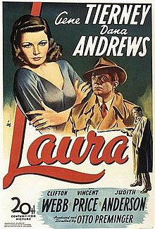

Opening Scene
- Recollection while seeing his collection
- Laura was his 'possession,' something to be obtained
- Clocks were made for each other
- Two males obsessed with Laura, but are opposites - doubles/doppelgangers
Waldo (unreliable narrator) tells his story in flashback, no one can back his story. The character as well as the actor was gay
Narration switches from Waldo to the detective 34 minutes into the film
Unreliable Narration - unreliable characters
Plot driven - who killed Laura?
Detective Falls in Love Scene
- music score - highs and lows on cue depending on what the detective does
- Detective is 'taking possession' of Laura or Waldo's possessions
- Waldo comes to try to take back his possessions and Detective says no
- Transition of narration
- Detective gets reflected by many surfaces
- After this scene - when the camera zooms into the Detective then Laura enters - it could all be his dream (wish fulfillment
- Game - keeps him calm, keeps throwing it to the side later in film
- Baseball and lots of alcohol - traps him into being controlling of Laura (idea of a classmate)
- If it is a dream - the ultimate abstract realism. Detective is basic his dream girl (ideal) based on another's unreliable view of Laura.
- We only know Laura through other's eyes
- Very few details
- Each narration/narrator is jealous of Laura